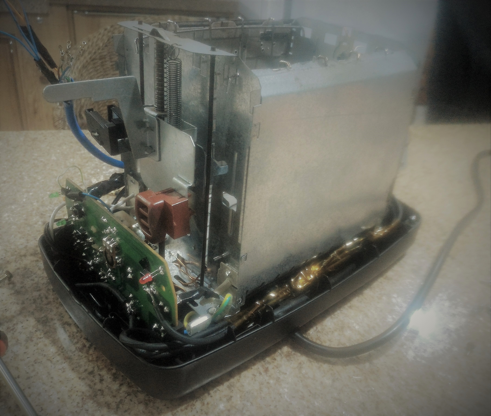

Sobre
Descrição
Projeto em parceria com a Empresa Júnior CONAQ, vinculado ao Departamento
de Engenharia Química e Alimentos (EQA) da Universidade Federal de Santa Catarina (UFSC). Sistema de "forno" de pasteurização/antimicrobiano. Relevante para indústria alimentícia,
controle de qualidade de alimentos e saúde. Mais viável economicamente que os disponíveis no mercado. Depurável e personalizável,
de acordo com a disponibilização de código e materiais necessários para o entendimento do projeto.
Integrantes
André Martins Pio de Mattos
Gustavo Simas da Silva
Ygor Gaspar Pereira
Disciplina
EEL7801
Nome: Projeto em Eletrônica Nível 1
Horas/Aula: 54
Tipo: Obrigatória
Mais Informações: Currículo do Curso e Site da Disciplina
Professor: Fernando Rangel
Objetivo Geral
Desenvolver habilidades de trabalho em equipe e de auto-aprendizagem a partir da solução de problemas.
Objetivos Específicos
- Estimular a criatividade dos alunos
- Promover a busca por conhecimentos disponíveis no ambiente do curso, mas nem sempre identificados
- Familiarizar o aluno com o fluxo de projeto de sistemas eletrônicos
- Introduzir ferramentas de gestão de projetos de engenharia
- Promover a inserção dos alunos em grupos de pesquisa
- Incentivar o aprendizado a partir da resolução de problemas.
Metodologia
- Ao longo do semestre, os alunos se reunirão semanalmente com o tutor da disciplina para discutir o andamento do projeto,
que será desenvolvido por etapas
- Os projetos poderão ser individuais ou desenvolvidos em equipes de até 4 alunos (mantendo-se a coerência entre complexidade
e dimensão da equipe)
- Haverá uma etapa de identificação e especificação do problema, que será trazido pelo aluno ou sugerido pelo tutor
- Em seguida, haverá um momento para planejamento, quando o aluno identificará os caminhos que o levarão à resolução
do problema
- Na sequência, o aluno passará à execução propriamente dita do problema
- Finalmente, ao fim do semestre, o aluno deverá:
- Realizar apresentação oral sumarizando o semestre
- Fazer demonstração experimental
- Entregar um relatório escrito
Ferramentas de Acompanhamento
Os grupos devem utilizar um software de gestão de projetos:
Projeto
Problemática
- Controle de Temperatura: é necessário verificar a temperatura do conteúdo alimentício para assegurar a correta
pasteurização, mas os equipamentos disponíveis no mercado atualmente não são baratos.
- Manutenção da Quantidade de Calor: para realizar o processo deve haver uma fonte de calor, no entanto, como
a empresa não dispõe do equipamento adequado, utiliza um fogão convencional.
- Aquecimento Uniforme: um desafio encontrado é aquecer o conteúdo da forma mais uniforme possível, pois é natural
as extremidades externas aquecerem mais rapidamente que o centro.
- Equipamento Confiável: o método atualmente utilizado não é prático e demanda esforço, porque a falta de equipamentos
adequados dificulta a realização de testes.
Objetivos

- Aquecimento uniforme e eficiente para correta pasteurização
- Controle eficaz e realização de ajustes quando necessário
- Segurança: o equipamento não pode oferecer perigo aos usuários
- Preço: deve se apresentar sob um preço acessível, pois, atualmente, apenas um termômetro custaria mais de R$300,00
O quê
Equipamento com sistema automatizado de esterilização / forno antimicrobiano para indústria alimentícia. Produto viável em
porte, econômico e de precisão (preferencialmente). Realizar verificação de variáveis no processo, temperatura (principalmente),
entre outras relevantes para o objetivo de efetuar controle do aquecimento e garantir a eficácia do procedimento.

Contato
Emails:
gustavosimassilva@gmail.com
andrempmattos@gmail.com
ygorpereiraeel@gmail.com